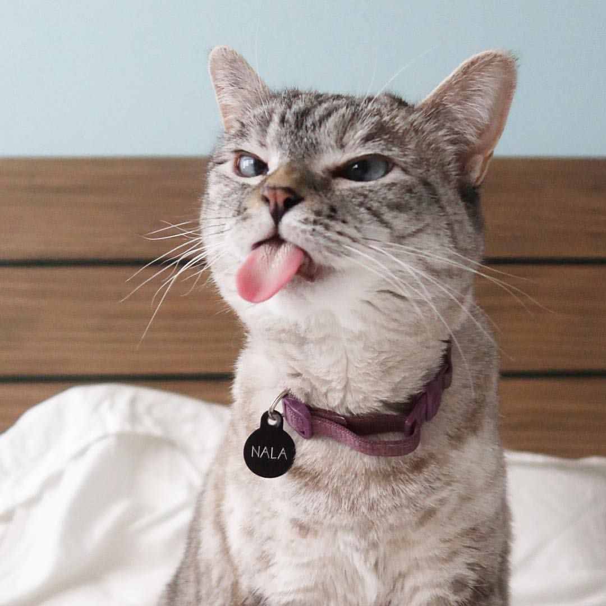

Animales Domesticos
Los animales domésticos son todos aquellos que están aptos para vivir entre los seres humanos, y que se adaptan sin problema alguno a las comodidades que ofrece la vida en el hogar y que necesitan cuidados especiales y de una alimentación balanceada.
Mateo
Mateo es un perro conocido por su carisma y sus videos graciosos. Ocupa una gran cantidad de seguidores y es una buena mascota.

Nala
Nala se reconoce por sus brillantes ojos azules y su rostro perfecto. Ella ocupa un puesto en el libro Guinness World Records 2020 por tener la mayor cantidad de seguidores en Instagram para un gato.